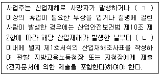
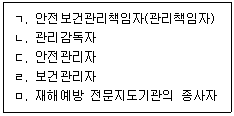
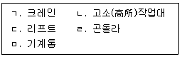
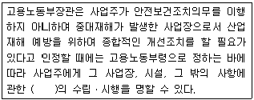
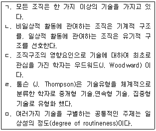
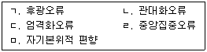
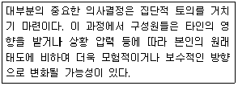
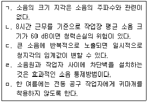
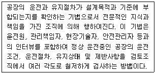

산업보건지도사 (2016-04-09 기출문제)
1과목: 산업안전보건법령
1. 산업안전보건법령상 사업주가 이행하여야 할 의무에 해당하는 것은?
- 사업장에 대한 재해 예방 지원 및 지도
- 근로자의 신체적 피로와 정신적 스트레스 등을 줄일 수 있는 쾌적한 작업환경조성 및 근로조건 개선
- 유해하거나 위험한 기계ㆍ기구ㆍ설비 및 물질 등에 대한 안전ㆍ보건상의 조치기준 작성 및 지도ㆍ감독
- 산업재해에 관한 조사 및 통계의 유지ㆍ관리
- 안전ㆍ보건을 위한 기술의 연구ㆍ개발 및 시설의 설치ㆍ운영
(정답률: 알수없음)

2. 산업안전보건법령상 안전ㆍ보건표지의 분류별 종류와 색채가 올바르게 연결된 것은?
- 지시표지(방독마스크 착용) - 바탕은 파란색, 관련 그림은 흰색
- 금지표지(물체이동금지) - 바탕은 흰색, 기본모형은 녹색, 관련 부호 및 그림은 흰색
- 경고표지(폭발성물질 경고) - 바탕은 노란색, 기본모형, 관련 부호 및 그림은 흰색
- 안내표지(비상용기구) - 바탕은 흰색, 기본모형은 빨간색, 관련 부호 및 그림은 검은색
- 안내표지(응급구호표지) - 바탕은 무색, 기본모형은 검은색
(정답률: 알수없음)
3. 산업안전보건법령상 산업재해 발생 보고에 관한 설명이다. ( )안에 들어갈 내용을 순서대로 올바르게 나열한 것은?

- ㄱ: 1일 ㄴ: 1개월
- ㄱ: 2일 ㄴ: 14일
- ㄱ: 3일 ㄴ: 1개월
- ㄱ: 5일 ㄴ: 2개월
- ㄱ: 5일 ㄴ: 3개월
(정답률: 알수없음)
4. 산업안전보건법령상 안전관리전문기관에 대한 지정의 취소 등에 관한 설명으로 옳지 않은 것은?
- 고용노동부장관은 안전관리전문기관이 지정요건을 충족하지 못한 경우 반드시 지정을 취소하여야 한다.
- 고용노동부장관은 안전관리전문기관이 거짓이나 그 밖의 부정한 방법으로 지정을 받은 경우 지정을 취소하여야 한다.
- 고용노동부장관은 안전관리전문기관이 지정받은 사항을 위반하여 업무를 수행한 경우 6개월 이내의 기간을 정하여 그 업무의 정지를 명할 수 있다.
- 안전관리전문기관은 고용노동부장관으로부터 지정이 취소된 경우에 그 지정이 취소된 날부터 2년 이내에는 안전관리전문기관으로 지정받을 수 없다.
- 고용노동부장관이 안전관리전문기관에 대하여 업무의 정지를 명하여야 하는 경우에 그 업무정지가 이용자에게 심한 불편을 주거나 공익을 해할 우려가 있다고 인정하면 업무정지처분에 갈음하여 1억원 이하의 과징금을 부과할 수 있다.
(정답률: 알수없음)
5. 산업안전보건법령상 산업안전보건위원회에 관한 설명으로 옳지 않은 것은?
- 사업주는 산업안전ㆍ보건에 관한 중요 사항을 심의ㆍ의결하기 위하여 근로자와 사용자가 같은 수로 구성되는 산업안전보건위원회를 설치ㆍ운영하여야 한다.
- 사업주는 유해하거나 위험한 기계ㆍ기구와 그 밖의 설비를 도입한 경우 안전ㆍ보건조치에 관한 사항에 대하여는 산업안전보건위원회의 심의ㆍ의결을 거쳐야 한다.
- 산업안전보건위원회의 위원장은 위원 중에서 호선(互選)한다. 이 경우 근로자위원과 사용자위원 중 각 1명을 공동위원장으로 선출할 수 있다.
- 사업주는 안전보건관리규정을 작성하거나 변경할 때에는 산업안전보건위원회의 심의ㆍ의결을 거쳐야 한다. 다만, 산업안전보건위원회가 설치되어 있지 아니한 사업장의 경우에는 근로자대표의 동의를 받아야 한다.
- 산업안전보건위원회는 산업안전ㆍ보건에 관한 중요사항에 대하여 심의ㆍ의결을 하지만 해당 사업장 근로자의 안전과 보건을 유지ㆍ증진시키기 위하여 필요한 사항을 정할 수 없다.
(정답률: 알수없음)
6. 산업안전보건법령상 안전보건관리규정 작성 시 포함되어야 할 사항이 아닌 것은?
- 사고 조사 및 대책 수립에 관한 사항
- 안전ㆍ보건 관리조직과 그 직무에 관한 사항
- 작업장 안전관리에 관한 사항
- 작업장 건설과 민원대책에 관한 사항
- 작업장 보건관리에 관한 사항
(정답률: 알수없음)
7. 산업안전보건법령상 작업중지 등에 관한 설명으로 옳지 않은 것은?
- 사업주는 산업재해가 발생할 급박한 위험이 있을 때 또는 중대재해가 발생하였을 때에는 즉시 작업을 중지시키고 근로자를 작업장소로부터 대피시키는 등 필요한 안전ㆍ보건상의 조치를 한 후 작업을 다시 시작하여야 한다.
- 근로자는 산업재해가 발생할 급박한 위험으로 인하여 작업을 중지하고 대피하였을 때에는 사태가 안정된 후에 그 사실을 위 상급자에게 보고하는 등 적절한 조치를 취하여야 한다.
- 사업주는 산업재해가 발생할 급박한 위험이 있다고 믿을 만한 합리적인 근거가 있을 때에는 산업안전보건법의 규정에 따라 작업을 중지하고 대피한 근로자에 대하여 이를 이유로 해고나 그 밖의 불리한 처우를 하여서는 아니 된다.
- 고용노동부장관은 중대재해가 발생하였을 때에는 그 원인 규명 또는 예방대책 수립을 위하여 중대재해 발생원인을 조사하고, 근로감독관과 관계 전문가로 하여금 고용노동부령으로 정하는 바에 따라 안전ㆍ보건진단이나 그 밖에 필요한 조치를 하도록 할 수 있다.
- 누구든지 중대재해 발생현장을 훼손하여 중대재해 발생의 원인조사를 방해하여서는 아니 된다.
(정답률: 알수없음)
8. 산업안전보건법령상 사업주가 작업 중 위험을 방지하기 위하여 필요한 안전조치를 취해야 할 장소가 아닌 것은?
- 근로자가 추락할 위험이 있는 장소
- 토사ㆍ구축물 등이 붕괴할 우려가 있는 장소
- 방사선ㆍ유해광선ㆍ고온ㆍ저온ㆍ초음파ㆍ소음ㆍ진동ㆍ이상기압 등에 의한 건강장해의 우려가 있는 장소
- 물체가 떨어지거나 날아올 위험이 있는 장소
- 작업 시 천재지변으로 인한 위험이 발생할 우려가 있는 장소
(정답률: 알수없음)
9. 산업안전보건법령상 도급사업 시의 안전ㆍ보건조치 등을 위하여 2일에 1회 이상 순회점검하여야 하는 사업의 작업장에 해당하지 않는 것은?
- 건설업의 작업장
- 정보서비스업의 작업장
- 제조업의 작업장
- 토사석 광업의 작업장
- 음악 및 기타 오디오물 출판업의 작업장
(정답률: 알수없음)
10. 산업안전보건법령상 고용노동부장관이 실시하는 안전ㆍ보건에 관한 직무교육을 받아야 할 대상자를 모두 고른 것은?

- ㄱ, ㄴ
- ㄴ, ㄷ
- ㄱ, ㄴ, ㄷ
- ㄴ, ㄹ, ㅁ
- ㄱ, ㄷ, ㄹ, ㅁ
(정답률: 알수없음)
11. 산업안전보건기준에 관한 규칙상 가설통로를 설치하는 경우 준수하여야 하는 사항에 관한 설명으로 옳지 않은 것은?
- 경사는 30도 이하로 할 것. 다만, 계단을 설치하거나 높이 2미터 미만의 가설통로로서 튼튼한 손잡이를 설치한 경우에는 그러하지 아니하다.
- 경사가 15도를 초과하는 경우에는 미끄러운 구조로 할 것
- 추락할 위험이 있는 장소에는 안전난간을 설치할 것. 다만, 작업상 부득이한 경우에는 필요한 부분만 임시로 해체할 수 있다.
- 수직갱에 가설된 통로의 길이가 15미터 이상인 경우에는 10미터 이내마다 계단참을 설치할 것
- 건설공사에 사용하는 높이 8미터 이상인 비계다리에는 7미터 이내마다 계단참을 설치할 것
(정답률: 알수없음)
12. 산업안전보건법령상 안전관리자가 수행하여야 할 업무가 아닌 것은?
- 사업장 순회점검ㆍ지도 및 조치의 건의
- 산업재해 발생의 원인 조사ㆍ분석 및 재발 방지를 위한 기술적 보좌 및 조언ㆍ지도
- 작업장 내에서 사용되는 전체 환기장치 및 국소 배기장치 등에 관한 설비의 점검과 작업방법의 공학적 개선에 관한 보좌 및 조언ㆍ지도
- 산업재해에 관한 통계의 유지ㆍ관리ㆍ분석을 위한 보좌 및 조언ㆍ지도
- 업무수행 내용의 기록ㆍ유지
(정답률: 알수없음)
13. 산업안전보건법령상 도급사업 시의 안전ㆍ보건조치 등에 관한 설명으로 옳은 것은?
- 도급사업과 관련하여 산업재해를 예방하기 위하여 안전ㆍ보건에 관한 협의체를 구성하는 경우 도급인인 사업주 및 그의 수급인인 사업주의 일부만으로 구성할 수 있다.
- 수급인인 사업주는 도급인인 사업주가 실시하는 근로자의 해당 안전ㆍ보건ㆍ위생교육에 필요한 장소 및 자료의 제공 등 필요한 조치를 하여야 한다.
- 안전ㆍ보건상 유해하거나 위험한 작업을 도급하는 경우 도급인은 수급인에게 자료제출을 요구하여야 한다.
- 도급인인 사업주가 합동안전ㆍ보건점검을 할 때에는 도급인인 사업주, 수급인인 사업주, 도급인 및 수급인의 근로자 각 1명으로 점검반을 구성하여야 한다.
- 안전ㆍ보건상 유해하거나 위험한 작업 중 사업장 내에서 공정의 일부분을 도급하는 도금작업은 시ㆍ도지사의 승인을 받지 아니하면 그 작업만을 분리하여 도급을 줄 수 없다.
(정답률: 알수없음)
14. 산업안전보건법령상 유해ㆍ위험 방지를 위하여 방호조치가 필요한 기계ㆍ기구 등에 해당하지 않는 것은?
- 예초기
- 원심기
- 전단기(剪斷機) 및 절곡기(折曲機)
- 지게차
- 금속절단기
(정답률: 알수없음)
15. 산업안전보건법령상 기계ㆍ기구 등을 설치ㆍ이전하는 경우에 안전인증을 받아야 하는 기계ㆍ기구 등을 모두 고른 것은?

- ㄱ, ㄴ, ㄷ
- ㄱ, ㄷ, ㄹ
- ㄴ, ㄷ, ㅁ
- ㄴ, ㄹ, ㅁ
- ㄷ, ㄹ, ㅁ
(정답률: 알수없음)
16. 산업안전보건법령상 자율안전확인의 신고를 면제하는 경우에 해당하지 않는 것은?
- 「품질경영 및 공산품안전관리법」제14조에 따른 안전인증을 받은 경우
- 「산업표준화법」제15조에 따른 인증을 받은 경우
- 「전기용품안전관리법」제3조 및 제5조에 따른 안전인증 및 안전검사를 받은 경우
- 「농업기계화촉진법」제9조에 따른 검정을 받은 경우
- 「방위사업법」제28조 제1항에 따른 품질보증을 받은 경우
(정답률: 알수없음)
17. 산업안전보건법령상 안전검사 대상이 아닌 것은?
- 전단기
- 건조설비 및 그 부속설비
- 롤러기(밀폐형 구조)
- 프레스
- 화학설비 및 그 부속설비
(정답률: 알수없음)
18. 산업안전보건법령상 제조 또는 사용허가를 받아야 하는 유해물질에 해당하는 것은?
- 황린(黃燐) 성냥
- 벤조트리클로리드
- 백석면
- 폴리클로리네이티드터페닐(PCT)
- 4-니트로디페닐과 그 염
(정답률: 알수없음)
19. 산업안전보건법령상 신규화학물질의 유해성ㆍ위험성 조사 대상에서 제외되는 것은?
- 방사성 물질
- 노말헥산
- 포름알데히드
- 카드뮴 및 그 화합물
- 트리클로로에틸렌
(정답률: 알수없음)
20. 산업안전보건법령상 근로자의 보건관리에 관한 설명으로 옳지 않은 것은?
- 사업주는 작업환경측정의 결과를 해당 작업장 근로자에게 알려야 하며, 그 결과에 따라 근로자의 건강을 보호하기 위하여 해당 시설ㆍ설비의 설치ㆍ개선 또는 건강진단의 실시 등 적절한 조치를 하여야 한다.
- 고용노동부장관은 근로자의 건강을 보호하기 위하여 필요하다고 인정할 때에는 사업주에게 특정근로자에 대한 임시건강진단의 실시나 그 밖에 필요한 조치를 명할 수 있다.
- 고용노동부장관이 역학조사(疫學調査)를 실시하는 경우 사업주 및 근로자는 적극 협조하여야 하며, 정당한 사유없이 이를 거부ㆍ방해하거나 기피하여서는 아니 된다.
- 사업주는 잠함(潛艦) 또는 잠수작업 등 높은 기압에서 하는 위험한 작업에 종사하는 근로자에게는 1일 6시간, 1주 34시간을 초과하여 근로하게 하여서는 아니 된다.
- 사업주는 산업안전보건위원회 또는 근로자대표가 요구하면 작업환경측정 결과에 대한 설명회를 직접 개최하여야 하며, 작업환경측정을 한 기관으로 하여금 개최하도록 하여서는 아니 된다.
(정답률: 알수없음)
21. 산업안전보건법령상 사업주가 근로를 금지시켜야 하는 질병자에 해당하지 않는 것은?
- 정신분열증에 걸린 사람
- 마비성 치매에 걸린 사람
- 심장ㆍ신장ㆍ폐 등의 질환이 있는 사람으로서 근로에 의하여 병세가 악화될 우려가 있는 사람
- 결핵, 급성상기도감염, 진폐, 폐기종의 질병에 걸린 사람
- 전염을 예방하기 위한 조치를 하지 않은 상태에서 전염될 우려가 있는 질병에 걸린 사람
(정답률: 알수없음)
22. 산업안전보건법령상 고용노동부장관이 사업주에게 수립ㆍ시행을 명할 수 있는 계획에 관한 설명이다. ( )안에 들어갈 내용으로 옳은 것은?

- 유해ㆍ위험방지계획
- 안전교육계획
- 보건교육계획
- 비상조치계획
- 안전보건개선계획
(정답률: 알수없음)
23. 산업안전보건법령상 산업안전지도사 및 산업보건지도사(이하 “지도사”라 함)에 관한 설명으로 옳지 않은 것은?
- 지도사가 그 직무를 시작할 때에는 고용노동부장관에게 신고하여야 한다.
- 지도사는 그 직무상 알게 된 비밀을 누설하거나 도용하여서는 아니 된다.
- 지도사는 항상 품위를 유지하고 신의와 성실로써 공정하게 직무를 수행하여야한다.
- 지도사는 법령에 위반되는 행위에 관한 지도ㆍ상담을 하여서는 아니 된다.
- 지도사는 다른 사람에게 자기의 성명이나 사무소의 명칭을 사용하여 지도사의 직무를 수행하게 하거나 그 자격증을 대여하여서는 아니 된다.
(정답률: 알수없음)
24. 산업안전보건법령상 위험성평가 실시내용 및 결과의 기록ㆍ보존에 관한 설명으로 옳지 않은 것은?
- 위험성평가 대상의 유해ㆍ위험요인이 포함되어야 한다.
- 위험성 결정의 내용이 포함되어야 한다.
- 위험성 결정에 따른 조치의 내용이 포함되어야 한다.
- 위험성평가의 실시내용을 확인하기 위하여 필요한 사항으로서 고용노동부장관이 정하여 고시하는 사항이 포함되어야 한다.
- 사업주는 위험성평가 실시내용 및 결과의 기록ㆍ보존에 따른 자료를 5년간 보존하여야 한다.
(정답률: 알수없음)
25. 산업안전보건법령상 산업보건지도사의 직무에 해당하지 않는 것은?
- 작업환경의 평가 및 개선 지도
- 산업보건에 관한 조사ㆍ연구
- 근로자 건강진단에 따른 사후관리 지도
- 유해ㆍ위험의 방지대책에 관한 평가ㆍ지도
- 작업환경 개선과 관련된 계획서 및 보고서의 작성
(정답률: 알수없음)
2과목: 산업보건일반
26. 다음은 자동차 공장에서 5개의 근로자 그룹별 공기 중 금속가공유 노출농도의 대표치와 변이를 나타낸 것이다. 금속가공유 노출이 상대적으로 가장 비슷한 근로자 그룹은?
- 근로자 1그룹: GM = 0.2 mg/m3, GSD = 1.1
- 근로자 2그룹: GM = 0.5 mg/m3, GSD = 2.1
- 근로자 3그룹: GM = 1.0 mg/m3, GSD = 3.5
- 근로자 4그룹: GM = 0.4 mg/m3, GSD = 4.0
- 근로자 5그룹: GM = 0.8 mg/m3, GSD = 2.9
(정답률: 알수없음)
27. 후향적 코호트(retrospective cohort) 역학연구에서 사례군(환자군, case)과 대조군 (control)을 비교하는 변수로 옳은 것은?
- 유병율
- 사망율
- 유해인자 노출 비율
- 질병 발생율
- 증상 호소율
(정답률: 알수없음)
28. 도장 공정에서 일하는 3개 직종(감독, 운전, 정비)별로 분진 평균 노출 농도를 통계적으로 비교하고자 할 경우 사용해야 할 자료분석 방법은? (단, 그룹별 분진농도는 모두 정규분포한다고 가정한다.)
- 자기상관(autocorrelation)
- 분산분석(ANOVA)
- 상관(correlation)
- 회귀분석(regression)
- 박스 플롯(box plot)
(정답률: 알수없음)
29. 체적 15 m3인 작업장에서 톨루엔이 포함된 신너(thinner)를 취급하는 과정에서 공기 중으로 증발된 톨루엔 부피가 0.1 L/min이었다. 이 작업장에서 시간 당 공기교환은 5회 일어난다고 가정할 때 공기 중 톨루엔 농도(ppm)는?
- 0.008
- 0.08
- 0.8
- 8
- 80
(정답률: 알수없음)
30. 다음 중 밀폐 공간(confined space)이라고 볼 수 없는 작업 환경은?
- 기름 탱크 내부 도장
- 디젤 차량 하부 도장
- 집진설비 내부 용접
- 지하 정화조 정비
- 가스 저장 탱크 내부 도장
(정답률: 알수없음)
31. 작업환경 노출기준(occupational exposure limit)에 관한 설명으로 옳은 것은?
- 노출기준 이하 노출에서는 안전하다.
- 법적 노출기준은 질병 예방만을 목적으로 설정되었다.
- 질병 보상기준으로도 활용될 수 있다.
- 노출기준은 항상 변화될 수 있다.
- 대부분 유해인자들의 노출기준은 인체실험 결과에 근거해서 설정되었다.
(정답률: 알수없음)
32. 유해인자 노출에 따른 암 발생 단계로 옳은 것은?
- 진행(progression) → 개시(initiation) → 촉진(promotion)
- 촉진 → 개시 → 진행
- 개시 → 촉진 → 진행
- 개시 → 진행 → 촉진
- 촉진 → 진행 → 개시
(정답률: 알수없음)
33. 직무노출매트릭스(job exposure matrix)를 활용할 수 있는 사례가 아닌 것은?
- 건강 영향 분류
- 근로자 유해인자 노출 분류
- 과거 유해인자 노출 추정
- 유사 노출 그룹 분류
- 유해인자 노출 근로자 코호트 구축
(정답률: 알수없음)
34. 생물학적 유해인자 노출이 주요 위험인 환경(또는 직무)이 아닌 것은?
- 정화조
- 샌드 블라스팅(sand blasting)
- 환경미화원
- 절삭가공 공정
- 폐수처리장
(정답률: 알수없음)
35. 다음 중 산업안전보건법령상 발암물질이 아닌 유해인자는?
- 6가 크롬
- 비소
- 벤젠
- 수은
- PAHs(다핵방향족탄화수소화합물)
(정답률: 알수없음)
36. 근로자 유해인자 노출평가에서 예비조사를 실시하는 주요 목적이 아닌 것은?
- 작업환경 측정 전략을 수립하기 위해
- 유사노출그룹을 설정하기 위해
- 작업 공정과 특성을 파악하기 위해
- 특수건강진단 대상자를 선정하기 위해
- 근로자가 노출되는 유해인자를 파악하기 위해
(정답률: 알수없음)
37. 공기 중 금속을 정량하기 위한 일반적인 분석 장비는?
- 원자흡광광도계(AA), 유도결합플라즈마(ICP)
- 분광광도계, 이온크로마토그래피(IC)
- 위상차현미경, 원자흡광광도계(AA)
- 흑연로장치, 가스크로마토그래피(GC)
- 유도결합플라즈마(ICP), 액체크로마토그래피(LC)
(정답률: 알수없음)
38. 최근 발생한 메탄올 중독 사건에 관한 설명으로 옳지 않은 것은?
- 주요 중독 건강영향은 시각손상이었다.
- 메탄올은 CNC 가공공정에서 사용되었다.
- 건강영향은 5년 이상 만성 노출로 발생되었다.
- 특수건강진단을 실행한 적이 없었다.
- 작업환경 중 메탄올 농도는 노출기준을 훨씬 초과하였다.
(정답률: 알수없음)
39. 이온화(전리) 방사선에 노출될 수 있는 직종이 아닌 것은?
- 지하철 정비 종사자
- 금속가공 작업자
- 비파괴 검사자
- 탄광 근로자
- 원자력 발전소 종사자
(정답률: 알수없음)
40. 고체흡착관(활성탄관)을 이황화탄소 1 ml로 추출하여 가스크로마토 그래피로 정량한 톨루엔의 농도는 5 ppm이었다. 0.2 L/min 펌프로 4시간 채취하였다. 탈착율은 98 %이였고 공시료에서 검출된 양은 없었다. 이 때 공기 중 톨루엔의 농도(㎍/m3)는 약 얼마인가?
- 66
- 86
- 106
- 126
- 146
(정답률: 알수없음)
41. 산업안전보건법령상 허용기준이 설정되어 있는 물질은?
- 라돈
- 트리클로로메탄
- 포름알데히드
- 수은
- 극저주파
(정답률: 알수없음)
42. 화학물질을 취급하는 작업 공정에서 중독사고 예방을 위해 게시해야 할 항목이 아닌 것은?
- 유해성ㆍ위험성
- 취급상의 주의사항
- 적절한 보호구 착용
- 작업환경 측정방법
- 응급조치 요령
(정답률: 알수없음)
43. 직업성 암 등 만성질병을 초래하는 직무 또는 원인을 규명하기 어려운 이유가 아닌 것은?
- 질병 진단이 어렵기 때문
- 작업기간 동안 노출된 정보가 부족하기 때문
- 직무나 환경에 의한 순수 영향 규명이 어렵기 때문
- 작업 공정이 없거나 변경되었기 때문
- 작업환경 중 노출된 물질이나 함량에 대한 정보가 부족하기 때문
(정답률: 알수없음)
44. 산업안전보건법령상 사업주가 실시해야 할 위험성평가(risk assessment)에 관한 설명으로 옳은 것은?
- 위험성평가는 허용기준 설정 인자에 대해서만 실시한다.
- 위험성은 유해인자의 독성(toxicity)과 유해성(hazard)만을 근거로 평가한다.
- 작업환경측정을 실시하면 위험성평가를 생략할 수 있다.
- 기계ㆍ기구, 설비, 원재료 등의 신규 도입 또는 변경하는 경우에도 위험성평가를 실시해야 한다.
- 서비스 업종은 위험성평가에서 제외된다.
(정답률: 알수없음)
45. 생물학적 모니터링에 관한 설명으로 옳지 않은 것은?
- 시료 채취 대상자에게 동의를 받지 않아도 되는 장점이 있다.
- 바이오마커(biomarker)로 유해물질 또는 대사산물을 측정한다.
- 건강 영향을 추정할 수 있는 적정 바이오마커를 찾는 것이 중요하다.
- 시료 보관, 처치, 분석에 주의를 요하는 방법이다.
- 시료 채취시 근로자에게 부담을 주는 방법이다.
(정답률: 알수없음)
46. 사무실 실내 공기 질(indoor air quality) 관리에 관한 설명으로 옳은 것은?
- 실내공기오염 지표로 사용하는 인자는 분진이다.
- 현재 PM10 기준치는 10 ㎍/m3이다.
- ACH(시간당 공기교환 횟수)는 공간 체적과 공기 유속으로 산정한다.
- 일반적으로 음압 시설을 설치해야 한다.
- 실내공기오염에 의해 호흡기 자극 및 과민성 질환이 발생될 수 있다.
(정답률: 알수없음)
47. 유해중금속의 인체 노출 및 흡수, 독성에 관한 설명으로 옳지 않은 것은?
- 작업장에서 망간의 주요 노출 경로는 호흡기다.
- 납의 주요 표적기관은 중추신경계와 조혈기계이다.
- 유기수은은 무기수은 화합물보다 독성이 상대적으로 강하다.
- 6가 크롬은 세포막을 통과한 뒤 세포내에서 3가 크롬으로 산화되어 폐섬유화를 초래한다.
- 카드뮴은 폐렴, 폐수종, 신장질환 등을 일으킨다.
(정답률: 알수없음)
48. 산업안전보건기준에 관한 규칙상 근골격계 부담 작업에 해당되지 않는 것은?
- 하루에 4시간 이상 집중적으로 자료입력 등을 위해 키보드 또는 마우스를 조작하는 작업
- 하루에 10회 이상 25 kg 이상의 물체를 드는 작업
- 하루에 총 2시간 이상 목, 어깨, 팔꿈치, 손목 또는 손을 사용하여 같은 동작을 반복하는 작업
- 하루에 총 2시간 이상 쪼그리고 앉거나 무릎을 굽힌 자세에서 이루어지는 작업
- 하루에 총 2시간 이상, 분당 1회 미만 4.5 kg 이상의 물체를 양손으로 드는 작업
(정답률: 알수없음)
49. 고열작업에 관한 설명으로 옳은 것은?
- 흑구온도와 기온과의 차이를 실효복사온도라 하고 이는 감각온도와 상관이 없다.
- WBGT 측정기로 옥내 작업장을 측정할 때에는 자연습구온도와 흑구온도를 고려한다.
- 고열작업을 평가하는데 있어서 각 습구흑구 온도지수를 측정하고 작업강도를 고려하지 않는다.
- WBGT 30℃되는 중등작업을 하는 경우 휴식시간 없이 계속 작업을 해도 무방하다.
- 복사열은 열선풍속계로 측정한다.
(정답률: 알수없음)
50. 프레스 소음수준이 100 dB인 작업 환경에서 근로자는 NRR(Noise Reduction Rating)이 “29”인 귀덮개를 착용하고 있다. 차음효과와 근로자가 노출되는 음압수준을 순서대로 옳게 나열한 것은?
- 18 dB, 89 dB
- 11 dB, 78 dB
- 9 dB, 91 dB
- 18 dB, 92 dB
- 11 dB, 89 dB
(정답률: 알수없음)
3과목: 기업진단 · 지도
51. 인간관계론의 호손실험에 관한 설명으로 옳지 않은 것은?
- 종업원의 작업능률에 영향을 미치는 요인을 연구하였다.
- 조명실험은 실험집단과 통제집단을 나누어 진행하였다.
- 작업능률향상은 작업장에서 물리적 작업조건 변화가 가장 중요하다는 것을 확인하였다.
- 면접조사를 통해 종업원의 감정이 작업에 어떻게 작용하는가를 파악하였다.
- 작업능률은 비공식조직과 밀접한 관련이 있다는 것을 발견하였다.
(정답률: 알수없음)
52. 노사관계에 관한 설명으로 옳은 것은?
- 숍(shop) 제도는 노동조합의 규모와 통제력을 좌우할 수 있다.
- 체크오프(check off) 제도는 노동조합비의 개별납부제도를 의미한다.
- 경영참가 방법 중 종업원 지주제도는 의사결정 참가의 한 방법이다.
- 준법투쟁은 사용자측 쟁위행위의 한 방법이다.
- 우리나라 노동조합의 주요 형태는 직종별 노동조합이다.
(정답률: 알수없음)
53. 조직문화에 관한 설명으로 옳지 않은 것은?
- 조직사회화란 신입사원이 회사에 대하여 학습하고 조직문화를 이해하기 위한 다양한 활동이다.
- 조직의 핵심가치가 더 강조되고 공유되고 있는 강한 문화(strong culture)가 조직에 끼치는 잠재적 역기능을 무시해서는 안 된다.
- 조직문화는 하루아침에 갑자기 형성된 것이 아니고 한번 생기면 쉽게 없어지지 않는다.
- 창업자의 행동이 역할모델로 작용하여 구성원들이 그런 행동을 받아들이고 창업자의 신념, 가치를 외부화(externalization) 한다.
- 구성원 모두가 공동으로 소유하고 있는 가치관과 이념, 조직의 기본목적 등 조직체 전반에 관한 믿음과 신념을 공유가치라 한다.
(정답률: 알수없음)
54. 기술과 조직구조에 관한 설명으로 옳은 것을 모두 고른 것은?

- ㄱ, ㄴ
- ㄷ, ㄹ
- ㄴ, ㄷ, ㄹ
- ㄷ, ㄹ, ㅁ
- ㄱ, ㄷ, ㄹ, ㅁ
(정답률: 알수없음)
55. 생산시스템은 투입, 변환, 산출, 통제, 피드백의 5가지 구성요소로 설명할 수 있다. 생산시스템에 관한 설명으로 옳지 않은 것은?
- 변환은 제조공정의 경우 고정비와 관련성이 크다.
- 투입은 생산시스템에서 재화나 서비스를 창출하기 위해 여러 가지 요소를 입력하는 것이다.
- 변환은 여러 생산자원들을 효용성 있는 제품 또는 서비스로 바꾸는 것이다.
- 산출에서는 유형의 재화 또는 무형의 서비스가 창출된다.
- 피드백은 산출의 결과가 초기에 설정한 목표와 차이가 있는지를 비교하고 또한 목표를 달성할 수 있도록 배려하는 것이다.
(정답률: 알수없음)
56. ERP 시스템의 특징에 관한 설명으로 옳지 않은 것은?
- 수주에서 출하까지의 공급망과 생산, 마케팅, 인사, 재무 등 기업의 모든 기간 업무를 지원하는 통합시스템이다.
- 하나의 시스템으로 하나의 생산ㆍ재고거점을 관리하므로 정보의 분석과 피드백기능의 최적화를 실현한다.
- EDI(Electronic Data Interchange), CALS(Commerce At Light Speed), 인터넷 등으로 연결시스템을 확립하여 기업 간 자원 활용의 최적화를 추구한다.
- 대부분의 ERP시스템은 특정 하드웨어 업체에 의존하지 않는 오픈 클라이언트 서버시스템 형태를 채택하고 있다.
- 단위별 응용프로그램이 서로 통합, 연결되어 중복업무를 배제하고 실시간 정보관리체계를 구축할 수 있다.
(정답률: 알수없음)
57. 6시그마 품질혁신 활동에 관한 설명으로 옳지 않은 것은?
- 모토롤라사의 빌 스미스(Bill Smith)라는 경영간부의 착상으로 시작되었다.
- 6시그마 활동을 도입하는 조직은 규격 공차가 표준편차(시그마)의 6배라는 우수한 품질수준을 추구한다.
- DPMO란 100만 기회 당 부적합이 발생되는 건수를 뜻하는 용어로 시그마수준과 1 대 1로 대응되는 값으로 변환될 수 있다.
- 6시그마 수준의 공정이란 치우침이 없을 경우 부적합품률이 10억 개에 2개 정도로 추정되는 품질수준이란 뜻이다.
- 6시그마 활동을 효과적으로 실행하기 위해 블랙벨트(BB) 등의 조직원을 육성하여 프로젝트 활동을 수행하게 한다.
(정답률: 알수없음)
58. JIT(Just In Time) 시스템의 특징에 관한 설명으로 옳은 것은?
- 수요예측을 통해 생산의 평준화를 실현한다.
- 팔리는 만큼만 만드는 Push 생산방식이다.
- 숙련공을 육성하기 위해 작업자의 전문화를 추구한다.
- Fool proof 시스템을 활용하여 오류를 방지한다.
- 설비배치를 U라인으로 구성하여 준비교체 횟수를 최소화 한다.
(정답률: 알수없음)
59. 카플란(R. Kaplan)과 노턴(D. Norton)이 주창한 BSC(Balance Score Card)에 관한 설명으로 옳은 것은?
- 균형성과표로 생산, 영업, 설계, 관리부문의 균형적 성장을 추구하기 위한 목적으로 활용된다.
- 객관적인 성과 측정이 중요하므로 정성적 지표는 사용하지 않는다.
- 핵심성과지표(KPI)는 비재무적요소를 배제하여 책임소재의 인과관계가 명확한 평가가 이루어지도록 한다.
- 기업문화와 비전에 입각하여 BSC를 설정하므로 최고경영자가 교체되어도 지속적으로 유지된다.
- BSC의 실행을 위해서는 관리자들이 조직에서 어느 개인, 어느 부서가 어떤 지표의 달성에 책임을 지는지 확인하여야 한다.
(정답률: 알수없음)
60. 심리평가에서 검사의 신뢰도와 타당도의 상호관계에 관한 설명으로 옳은 것은?
- 타당도가 높으면 신뢰도는 반드시 높다.
- 타당도가 낮으면 신뢰도는 반드시 낮다.
- 신뢰도가 낮아도 타당도는 높을 수 있다.
- 신뢰도가 높아야 타당도가 높게 나온다.
- 신뢰도와 타당도는 직접적인 상호관계가 없다.
(정답률: 알수없음)
61. 종업원은 흔히 투입과 이로부터 얻게되는 성과를 다른 종업원과 비교하게 된다. 그 결과, 과소보상으로 인한 불형평 상태가 지각되었을 때, 아담스의 형평이론에서 예측하는 종업원의 후속 반응에 관한 설명으로 옳지 않은 것은?
- 현재의 상황을 형평 상태로 되돌리기 위하여 자신의 투입을 낮출 것이다.
- 자신의 성과를 높이기 위하여 조직의 원칙에 반하는 비윤리적 행동도 불사할 수 있다.
- 자신과 타인의 투입-성과 간 불형평 상태에 어떤 요인이 영향을 주었을 거라는 등 해당 상황을 왜곡하여 해석하기도 한다.
- 애초에 비교 대상이 되었던 타인을 다른 비교 대상으로 교체할 수 있다.
- 개인의 '형평민감성'이 높고 낮음에 관계없이 형평 상태로 되돌리려는 행동에서 차이가 없다.
(정답률: 알수없음)
62. 조직내 종업원들에게 요구되는 바람직한 특성이나 성공적인 수행을 예측해주는 '인적 특성이나 자질'을 찾아내는 과정은?
- 작업자 지향 절차
- 기능적 직무분석
- 역량모델링
- 과업 지향적 절차
- 연관분석
(정답률: 알수없음)
63. 영업 1팀의 A팀장은 팀원들의 직무수행을 긍정적으로 평가하는 것으로 유명하다. 영업 1팀의 팀원들은 실제 직무수행 수준보다 언제나 높은 평가를 받는다. 한편 영업 2팀의 B팀장은 대부분 팀원을 보통 수준으로 평가한다. 특히 B팀장 자신이 잘 모르는 영역 평가에서 이러한 현상이 두드러진다. 직무수행 평가 패턴에서 A와 B팀장이 각각 범하고 있는 오류(또는 편향)를 순서대로(A, B) 옳게 나열한 것은?

- ㄱ, ㄷ
- ㄱ, ㄹ
- ㄴ, ㄷ
- ㄴ, ㄹ
- ㄴ, ㅁ
(정답률: 알수없음)
64. 다음을 설명하는 용어는?

- 집단사고
- 집단극화
- 동조
- 사회적 촉진
- 복종
(정답률: 알수없음)
65. 산업현장에서 운영되고 있는 팀(team)의 유형에 관한 설명으로 옳지 않은 것은?
- 전술적 팀(tactical team): 수행절차가 명확히 정의된 계획을 수행할 목적으로 하며,경찰 특공대 팀이 대표적임
- 문제해결 팀(problem-solving team): 특별한 문제나 이슈를 해결할 목적으로 구성되며, 질병통제센터의 진단 팀이 대표적임
- 창의적 팀(creative team): 포괄적 목표를 가지고 가능성과 대안을 탐색할 목적으로 구성되며, IBM의 PC 설계 팀이 대표적임
- 특수 팀(ad hoc team): 조직에서 일상적이지 않고 비전형적인 문제를 해결할 목적으로 구성되며, 팀의 임무를 완수한 후 해체됨
- 다중 팀(multi-team): 개인과 조직시스템 사이를 조정(moderating)하는 메타(meta)적 성격을 갖고 있음
(정답률: 알수없음)
66. 인사선발에서 활발하게 사용되는 성격측정 분야의 하나로 5요인(Big 5)성격모델이 있다. 성격의 5요인에 해당되지 않는 것은?
- 성실성(conscientiousness)
- 외향성(extraversion)
- 신경성(neuroticism)
- 직관성(immediacy)
- 경험에 대한 개방성(openness to experience)
(정답률: 알수없음)
67. 소음에 관한 설명으로 옳은 것을 모두 고른 것은?

- ㄱ, ㄴ
- ㄴ, ㄷ
- ㄷ, ㄹ
- ㄱ, ㄹ, ㅁ
- ㄴ, ㄷ, ㄹ
(정답률: 알수없음)
68. 주의(attention)에 관한 설명으로 옳은 것은?
- 용량의 제한이 없기 때문에 한 번에 여러 과제를 동시에 수행할 수 있다.
- 많은 사람들 가운데 오직 한 사람의 목소리에만 주의를 기울일 수 있는 것은 선택주의(selective attention) 덕분이다.
- 선택된 자극의 여러 속성을 통합하고 처리하기 위해 분할주의(divided attention)가 필요하다.
- 운전하면서 친구와 대화하기처럼 두 과제 모두를 성공적으로 수행하기 위해서는 초점주의(focused attention)가 필요하다.
- 무덤덤한 여러 얼굴 가운데 유일하게 화난 얼굴은 의식하지 않아도 쉽게 눈에 띄는데, 이는 무주의 맹시(inattentional blindness) 때문이다.
(정답률: 알수없음)
69. 안전보건 경영시스템에서 성공을 거두기 위해 필요한 5가지 요소가 아닌 것은?
- 안전보건경영 추진을 위한 최고경영자의 리더십 개발
- 안전보건경영 추진을 위한 조직의 개발
- 효율적인 안전보건 경영정책 개발
- 안전보건정책의 계획수립, 측정 및 기술개발
- 안전보건정책의 성과검토
(정답률: 알수없음)
70. 제조물책임법이 미치는 영향 중 부정적인 영향이 아닌 것은?
- 기업의 이미지 저하
- 신제품 개발의 지연
- 기업의 책임 분산
- 소송 증가에 따른 기업 경영 악화 초래
- 제조 원가의 상승
(정답률: 알수없음)
71. 산업안전보건법령상 위험한 작업을 필요로 하는 기계ㆍ기구 및 설비를 설치ㆍ이전하는 경우에 사업주가 유해ㆍ위험방지계획서를 작성하여 고용노동부장관에게 제출하여야 하는 기계ㆍ기구 및 설비에 해당하지 않는 것은?
- 금속이나 그 밖의 광물의 용해로
- 고압 송전 및 배선 설비
- 화학설비
- 건조설비
- 가스집합 용접장치
(정답률: 알수없음)
72. 안전관리의 PDCA Cycle에 관한 설명으로 옳지 않은 것은?
- P 단계는 추진방법을 계획하고 교육ㆍ훈련을 하는 단계이다.
- D 단계는 계획에 대한 준비와 실행을 하는 단계이다.
- C 단계는 실행 결과를 목표와 비교하여 실행결과를 평가하는 단계이다.
- A 단계는 평가결과에 대한 보완을 통해 목표를 달성하는 단계이다.
- PDCA Cycle은 지속적으로 되풀이하는 유지개선의 사고방식이다.
(정답률: 알수없음)
73. 다음에서 설명하는 기법은?

- 위험과 운전분석기법
- 예비위험 분석기법
- 상대위험 순위결정기법
- 안정성 검토기법
- 인간오류 분석기법
(정답률: 알수없음)
74. 위험성평가를 시행하는 방법에 관한 설명으로 옳지 않은 것은?
- 정성적방법은 위험요소가 존재하는지를 찾아낸다.
- 정량적방법은 위험요소를 확률적으로 분석ㆍ평가한다.
- 정성적평가는 비교적 쉽고, 빠른 결과를 도출할 수 있다.
- 정성적평가는 기술수준지식 및 경험에 따라 주관적인 평가로 치우치기 쉬운 단점이 있다.
- 정량적평가는 주관적이고 정량화된 결과를 도출할 수 있고 신뢰성도 확보된다.
(정답률: 알수없음)
75. 추락 및 감전 위험방지용 안전모의 성능 시험 항목으로 옳지 않은 것은?
- 내관통성 시험
- 충격흡수성 시험
- 내전압성 시험
- 내수성 시험
- 내화성 시험
(정답률: 알수없음)